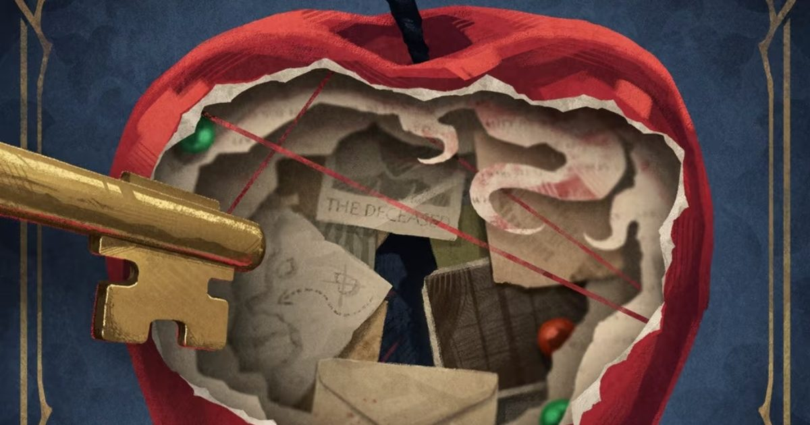

2026-11-04 · 版本机制深读

11 月 5 日 6:00 到 10:00 停服维护，4.1「亚特兰蒂斯谋杀案」开启，跑到 12 月 10 日凌晨 4:59。 两名新六星：上半佩施塔（星灵感，洞知体系生存位，11/5–11/26），下半伊芙琳（兽灵感，11/26–12/10）。 同期开大英图书馆联动「书页与小憩」、「湖的涟漪」自选征集，上下半签到合计 14 抽。 零氪全版本约 79 抽，小月卡约 99 抽。
这套配置本身不难懂：一个推理题材版本，两名新六星，一次机构联动，一堆常规玩法轮换。 但这一版真正的分水岭，藏在第三十期制作组播报的第二条里——那是一条不需要抽任何角色、却会把所有老队伍重算一遍的改动。
官方原文是这样的：
「在 4.1 版本，我们将对【属性提升】【属性削弱】类型效果进行优化，不同技能产生的同名效果可以同时存在并叠加生效，相同技能不同阶次的效果生效方式不做更改。」
一行字，但它是自开服以来对伤害公式动的最大一刀，比这次任何一名新角色都大。
为什么？因为在这之前，同名增益是「取最强、其余作废」的。 你队伍里两个角色都提供【创伤加成】，第二个人的那一份等于白给——它不会叠加，只会被比较。 这条规则默默支配了两年多的配队思路：同源增益只需要一个来源，重复即浪费。 于是所有人的队伍形态都趋同了：一个主 C、一个专属拐、一个通用拐、一个生存位，四个位置各司其职，谁也不多做一件事。
改完之后，「第二个提供同种增益的人」第一次有了独立价值。 配队的计价单位从「倍率」变成了「层数」——你不再问「这个拐的倍率多高」，而是问「这个队伍里同一种增益能叠几层」。
更值得注意的是它的商业属性：这条改动不产生任何营收。 它不卖角色、不卖礼包、不卖皮肤，它只做一件事——让所有已经存在的队伍重新被算一遍。 在一个靠新角色拉动流水的行业里，愿意花一个版本的改动预算去做一件「免费但有感知」的事，坦白说是少见的。
而这也解释了为什么本版本给的是佩施塔这样的角色：她的整套循环都在叠层。 任意友方释放洞知咒语 → 她叠【复仇线索】；释放洞知咒语时移除线索 → 换成【雪恨】；友方下一次洞知咒语消耗一层雪恨 → 加创伤加成与穿透率； 全队在【弱点洞穿】阶段累计行动次数越多 → 全队洞知创伤加成越高。 一个彻头彻尾的「层数型」角色，配一条「层数不再互相顶掉」的新规则—— 角色和规则修正不是两件事，是同一个补丁的两半。
少见的定位：星灵感，洞知体系生存位，兼承伤、治疗、驱散、增伤、激情存储五件事。 但她的核心只有一个东西——【「七友人」】。
入场自带，是一个以佩施塔最大生命值百分比计算的独立血条。任何己方受伤，它替其承担一定比例； 多名目标同时受击时，它每点生命要额外多挨伤害——也就是说，AOE 场景消耗得更快。 配套的【「七友人守护」】让它的血量不低于 1；被打到 1 时，佩施塔消耗守护与自身一定比例当前生命，让它回一段血。 注意这个顺序：先回血，再扛剩下的伤害。
另外三件：一技能【复仇戏码】挂【砍创】（每回合末造成基于佩施塔最大生命的本源创伤，同时填充星系洞知点，是她的洞知点发动机）； 二技能【生命之果】先均分全队生命，再驱散全体各一种属性削弱／状态异常／控制，再按自身最大生命比例回血，并单独给七友人回血（不受治疗效率影响）； 大招群伤、立即结算一次砍创、给全队【圆满结局】，七友人没了就重建。
我们的观察：这套机制真正的天花板，是她自己的血量。 七友人不是盾，是一个「按比例吸收」的血包，血量上限取决于佩施塔的最大生命值。 社区在测试期的估算是：目前游戏里血最厚的角色也就两三万，那七友人大概率在一万上下。 到了超高难环境，它不是免死金牌，是「多给你一回合」。 这个设计很聪明也很克制：它把「生存」从「堆防御」变成了「算回合」，但同时限制了她的上限——你不能靠她硬扛，只能靠她换时间。
所以抽取判断可以很简单： 玩洞知队就抽，不玩就别抽。 她的通用拐力（暴击创伤、创伤加成）是有的，但真正值钱的东西全绑在洞知体系上；放进传统纯色队，收益会明显打折。 资源紧张的玩家也请注意一点：社区前瞻普遍认为 0 塑能上场、洞 3 是体验分水岭，这不是一个「抽到就完整」的角色。 另外她有一个结构性缺口——没有回合外治疗，全靠七友人守护那套「先回血再扛」来补。补得好不好，只能等上线实测。
这次的卡池结构值得单独看：两名新六星都是非限定，两个版本后进常驻池；同时开「湖的涟漪」自选征集，从指定六星里挑一个提升概率，首次抽到的六星必为所选角色。
一个运营两年多、角色池早就过百的游戏，限定池的边际收益是在下降的——老玩家该有的都有了，新玩家被上百个角色挡在门外。 瓶颈不在「榨取」，在「入场」。
「非限定 + 自选保底」这套组合，本质是把「错过就没了」的焦虑，换成「早晚会有」的预期。 它并没有变便宜（上下半双六星照样吃抽），但它把新人的第一个月从「看着别人的图鉴」变成了「我也能组一队」。 这是拉新优先于榨取的信号。 长期看这是唯一能走的路，短期看流水一定难看——对一款已经过了爆发期的产品，这个取舍是清醒的。
这是这次最容易被当成福利一带而过、但其实最有意思的一处。
1999 的核心资产从来不是角色，是「真实历史 + 文学素养」这套气质。 而大英图书馆是极少数能给它「合法性」而不是「角色」的伙伴——它没有主角、没有台词、没有故事线，它只有藏书和年代。
代价立刻就出现了：联动只能落在衣着、旅券集、特效、8-bit 小游戏这些「可授权的表面」上。 没有剧情接口，因为对面根本不是叙事主体。
这和 我们月初写 FF14×EVA 那次是同一件事的另一种形态： 那次的结论是「给了美术权，没给叙事权」——前田真宏的头衔是 guest artist and designer，不是编剧。 而这一次更彻底：连叙事接口都没有，因为对面没有叙事可以给。
但换个角度看，这恰恰是 1999 能做、别人做不了的联动。 让《原神》去联大英图书馆，只能借来几张藏书插图；1999 借来的是「我们本来就在讲历史」这件事的官方确认书。 它不需要一个角色来撑场面，它需要的是一家机构说「是的，你们讲的年代是真的」。
推理题材有个天生的麻烦：它的快感是一次性的。 你知道凶手是谁之后，这段故事的重玩价值归零。而一款长线运营的抽卡游戏，要求所有内容都可重复消费——每日、每周、每版本。
4.1 的解法是把推理拆成可兑换的材料：「红鲱鱼推理爱好社」收集【杀鱼刀】，换养成素材。 解谜变成收集。
聪明的地方在于：它保住了可重复性，也让剧情党不会被卡住——你不需要真的推理，也能拿到全部奖励。 代价是，推理从「想明白」变成了「攒够」。 这是所有叙事型抽卡游戏共同的天花板，1999 这次没有绕过去，只是绕得比别人漂亮。
而版本被压到 35 天（官方说法是「为保证后续版本顺利开启」），补偿 600 雨滴 + 5 个苦目糖罐，也暴露了另一件事： 内容密度是被排期推着走的，不是被创作推着走的。 缩短一周对玩家的真实成本不是那 600 雨滴，是「同样的活动量挤进更短的时间」——该刷的还是要刷，只是缓冲没了。 补偿的是时间，不是抽数，这个区别值得记住。
叙事包装 8.6 / 规则改动 8.8 / 角色必要性 6.9 → 综合 7.8。 叙事这次很扎实（雷蒙内尔庄园、全员嫌疑人、苹果与钥匙的视觉母题），规则改动是本期真正的价值所在； 扣分在角色必要性：佩施塔是一个「体系专属」到近乎排他的角色，对非洞知队玩家几乎没有说服力。
真正被这个版本改变的不是剧情，是战斗。剧情负责回答「这一版卖什么」，规则负责回答「以后每一版怎么算」。 大部分版本的宣传重心都在前者，但只有后者会留下来。 所以我们建议：读 4.1 的公告，从第三条开始读。
「同名效果可叠加」这条改动，短期会制造一批「意外的强队」——那些本来就在堆同源增益、只是以前被规则废掉一半的阵容。 中长期看，它会迫使设计端重新定义「增益的稀缺性」：当叠加变成常态，未来新角色就不能只靠「再给一个同种 buff」来卖，必须给新的乘区。 这一刀砍的是过去两年的配队惯性，逼出来的是未来两年的设计压力。
| 游戏 | 版本主题形态 | 联动对象 | 可重复性从哪来 |
|---|---|---|---|
| 重返未来：1999 4.1 | 类型片（英伦密室推理） | 真实机构（大英图书馆） | 解谜拆成材料兑换 |
| 明日方舟 | 世界观切片（阵营/地区） | 多为联动 IP（彩虹六号等） | 关卡重打 + 素材本 |
| 崩坏：星穹铁道 | 主线章节 + 玩法小游戏 | 多为自家 IP 互引 | 模拟宇宙 / 忘却之庭常驻 |
三家其实都在回答同一个问题：怎么让「看故事」和「刷资源」不打架。 方舟的答案是让故事退到边上、把玩法留在中间；崩铁的答案是把两者分装成两条独立的产品线； 1999 这次选的是第三条——让故事本身变成资源管道。 风险也在这儿：一旦玩家学会「点掉对白、只收杀鱼刀」，那么下一次的推理版本，他们也会这么做。
11 月 5 日开服后，我们准备测三件事： ① 叠加的实际增量——同一套洞知队，在 4.0 与 4.1 两套规则下打同一个首领，记录创伤加成的层数差与最终伤害差。如果差不到 10%，说明这条改动是「公告上的大改、体验上的小改」； ② 七友人的存活回合数——在总力战级难度下，从满血到触发第一次守护要几回合。低于 2 回合说明它不是生存位，是一次性保险； ③ 首日抽数核对——按官方与社区口径（零氪约 79 抽）实测，看压缩到 35 天的版本到底少给了多少。
这一版最漂亮的地方，是它同时做了两件互相矛盾的事： 把一个最好卖的题材（密室推理）摆在最前面，却把真正的改动藏在最不显眼的一行字里。
如果你只想要佩施塔，请先确认自己在玩洞知队；如果你只是被苹果和钥匙吸引，那这一版的故事值得看，但不必为了它付钱。 而如果你想看懂 1999 接下来两年会怎么走——去读那条「同名效果可以叠加」的说明，那才是这一版的正文。